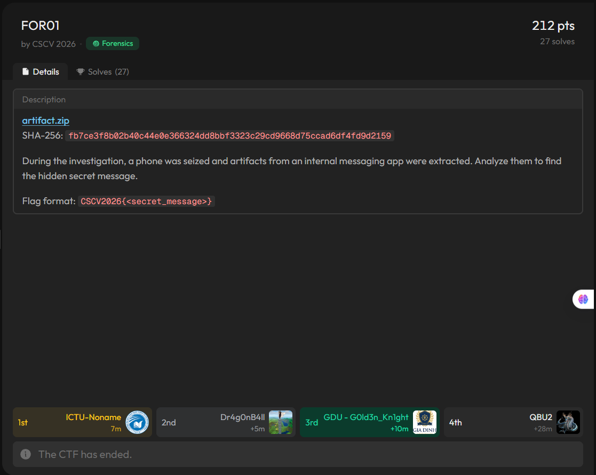
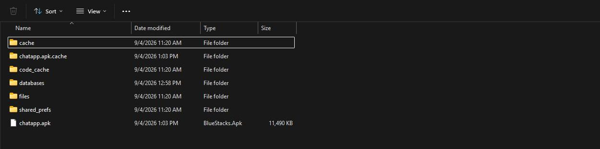
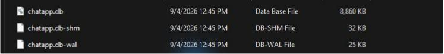
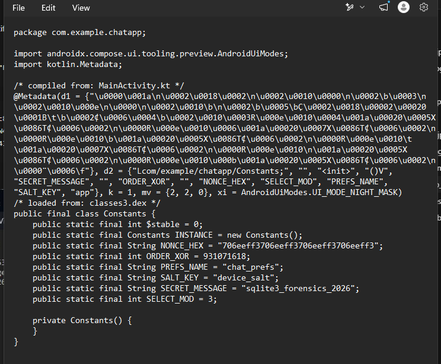
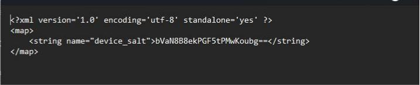

Thể loại: Mobile Forensics · SQLite WAL · Android APK · ChaCha20
Mục tiêu: tìmsecret_messagevà nộp theo dạngCSCV2026{<secret_message>}.
Bối cảnh và dữ liệu nhận được
Đề FOR01 mô tả một chiếc điện thoại bị thu giữ trong quá trình điều tra. Dữ liệu của ứng dụng nhắn tin nội bộ đã được trích xuất; nhiệm vụ của mình là tìm thông điệp bí mật ẩn trong đó.

Thư mục artifact có chatapp.apk, cơ sở dữ liệu SQLite databases/chatapp.db cùng hai tệp đi kèm chatapp.db-wal, chatapp.db-shm, và cấu hình shared_prefs/chat_prefs.xml. Tệp WAL đặc biệt đáng chú ý: SQLite lưu các phiên bản trang cơ sở dữ liệu theo cơ chế ghi trước vào WAL, nên nó có thể giữ dấu vết mà truy vấn trạng thái hiện tại không còn cho thấy. Tài liệu SQLite về WAL giải thích cách bản ghi giao dịch được thêm vào tệp này và cách SQLite chọn phiên bản trang để đọc.


| Artifact | Kích thước | SHA-256 |
|---|---|---|
chatapp.apk |
11.764.975 byte | 65aa2173bbc269db1c03521f422870c31fc5b0c3a8f9c54dd60e6827a906926e |
chatapp.db |
9.072.640 byte | ca8840dc01df7e78d2bbab5277aca5b7eefe4ae2865bfe94453a418917c3ec4f |
chatapp.db-wal |
24.752 byte | 8cd5fc0926b126ee6f9a4cbfa0fdd6f69bcb896f6d7454b0286874bf248ec4c4 |
Mình phân tích trên bản sao để không làm thay đổi artifact gốc. Điều này quan trọng với WAL: mở cơ sở dữ liệu cùng tệp -wal bằng một kết nối có quyền ghi có thể làm phát sinh checkpoint và thay đổi bản sao WAL. Script tái lập ở cuối bài chỉ đọc byte từ nguồn rồi dựng snapshot trong một tệp tạm.
Dấu vết bất thường trong WAL
Truy vấn chatapp.db ở trạng thái hiện tại cho thấy hai bảng threads và messages, gồm 5 nhóm và 951 tin nhắn. Các tin nhắn nhìn chung là hội thoại thường ngày; tìm trực tiếp flag hoặc thông điệp bí mật trong cột body không cho kết quả.
Mình chuyển sang đọc cấu trúc chatapp.db-wal. Header WAL dài 32 byte; với kích thước trang 4.096 byte, mỗi frame gồm header 24 byte và một trang dữ liệu 4.096 byte. Tệp dài 24.752 byte, đúng bằng 32 + 6 × (24 + 4.096), tức có 6 frame. Định dạng tệp SQLite mô tả cấu trúc header và frame này.
import struct
wal = open("databases/chatapp.db-wal", "rb").read()
page_size = struct.unpack_from(">I", wal, 8)[0] # 4096
for i in range((len(wal) - 32) // (24 + page_size)):
offset = 32 + i * (24 + page_size)
page_no, db_pages = struct.unpack_from(">II", wal, offset)
print(i, page_no, db_pages)
0 2215 2215
1 3 0
2 2166 0
3 2214 0
4 2215 2215
5 2215 2215
Trang 2215 xuất hiện ở frame 0, 4 và 5. Đây là lý do để so sánh các phiên bản của cùng một trang. Mình lấy 4.096 byte dữ liệu của từng frame, thay vào đúng vị trí trang 2215 trên bản sao chatapp.db, rồi truy vấn bản dựng lại bằng SQLite.
| Phiên bản trang 2215 | Số tin nhắn truy vấn được | ID 888–919 |
|---|---|---|
| Frame 0 | 919 | 32 dòng có body dạng Base64 |
| Frame 4 | 887 | Không còn các dòng này |
| Frame 5 / DB hiện tại | 951 | ID được dùng lại với hội thoại bình thường |
Ví dụ, ở frame 0, ID 888 thuộc nhóm ATTT Group, do Quân gửi lúc 02/09/2026 11:00:07 UTC+7, có body = Yw==. Giải Base64 được đúng một byte 0x63. Trong DB hiện tại, chính ID 888 lại có nội dung “user đó đổi mật khẩu chưa, ai confirm giúp”. ID 889 và 890 đều chứa wg== trong frame 0, mỗi chuỗi cho byte 0xc2. Sự thay đổi đồng loạt của 32 dòng cho thấy bản cũ trong WAL mới là dấu vết cần theo tiếp.
Mình trích toàn bộ ID 888–919 thành bảng đối chiếu. Nếu chỉ ghép 32 byte theo ID tăng dần thì thu được chuỗi nhị phân sau, chưa phải bản rõ:
63c2c25fc84999828d79c52b5ff343eba9a20132af2c552b3e7f8cacfbc74713
Tìm quy tắc chọn và thứ tự byte
Để hiểu 32 byte này, mình xem chatapp.apk. Lớp com.example.chatapp.Constants chứa các giá trị:

SECRET_MESSAGE = "sqlite3_forensics_2026"
SELECT_MOD = 3
ORDER_XOR = 931071618 # 0x377f0682
NONCE_HEX = "706eeff3706eeff3706eeff3706eeff3"
ORDER_XOR bằng magic 0x377f0682 ở đầu WAL. Giá trị này vừa củng cố hướng kiểm tra WAL, vừa gợi ý dùng XOR khi xử lý thứ tự. SELECT_MOD cho thấy cần chọn một phần bản ghi thay vì giải cả 32 byte. Phần chưa rõ là áp dụng chúng lên ID hay timestamp; mình kiểm tra các cách tương ứng và dùng kết quả giải mã có nghĩa để xác nhận.
Quy tắc khớp là giữ các dòng có (timestamp ^ ORDER_XOR) % SELECT_MOD == 0, rồi sắp tăng dần theo timestamp ^ ORDER_XOR. Có 16 dòng được chọn, với ID theo đúng thứ tự:
888, 891, 892, 895, 894, 901, 904, 902, 900, 907, 905, 910, 909, 913, 912, 915
Sau khi giải Base64 từng body và ghép theo thứ tự đó, ciphertext là:
635fc88299f3a9435f32a2552c7f3eac
Chú ý ID 895 đứng trước 894 trong chuỗi đã sắp; ghép theo ID tăng dần sẽ cho ciphertext khác. Đây là bước dễ làm sai nhất của bài.
Giải mã thông điệp
Tệp shared_prefs/chat_prefs.xml có giá trị device_salt = bVaN8B8ekPGF5tPMwKoubg==. Giải Base64 được 16 byte 6d568df01f1e90f185e6d3ccc0aa2e6e. Mình lấy SHA-256 của SECRET_MESSAGE ở dạng UTF-8 nối trực tiếp với salt này để tạo khóa 32 byte:

SHA256(b"sqlite3_forensics_2026" + device_salt)
= a8dab43b712b4880894ab4bc0515a8748b81368c5f44d4dd43067c9172cbe6c6
Dùng khóa đó, nonce 16 byte từ NONCE_HEX, và ChaCha20 để giải mã ciphertext. Mã dưới đây là phần cốt lõi; script đầy đủ còn tự dựng snapshot từ WAL:
import base64
import hashlib
from cryptography.hazmat.primitives.ciphers import Cipher, algorithms
salt = base64.b64decode("bVaN8B8ekPGF5tPMwKoubg==")
key = hashlib.sha256(b"sqlite3_forensics_2026" + salt).digest()
nonce = bytes.fromhex("706eeff3706eeff3706eeff3706eeff3")
ciphertext = bytes.fromhex("635fc88299f3a9435f32a2552c7f3eac")
message = Cipher(algorithms.ChaCha20(key, nonce), mode=None) \
.decryptor().update(ciphertext).decode("ascii")
print(message)
W4l_1s_s0_c00l!!
Thư viện cryptography nhận khóa ChaCha20 dài 32 byte và tham số nonce dài 16 byte cho API này; vì vậy cần truyền đúng toàn bộ NONCE_HEX, không cắt còn 12 byte như ở một số API khác. Tài liệu cryptography về ChaCha20.
Để kiểm tra từ artifact gốc, chạy:
python solve.py "F:\CSCV\CHUNG KHẢO\artifact"
Ciphertext: 635fc88299f3a9435f32a2552c7f3eac
Secret message: W4l_1s_s0_c00l!!